For more advanced users and the ones who want to have full control, we'll show here how to setup a plugin project in Visual Studio from scratch.
All following screenshots are taken from Visual Studio 2012, which is the recommended development environment for Cinema 4D R16.
The Visual Studio 2012 used for the screenshots got slightly configured to the developers preferences.
Most notably the theme was changed to "Dark".
This can be achieved by going to the Options dialog via Menu: Tools → Options.... On the Environment General subpage the theme can be changed.
Secondly the Property Manager got docked into the sidebar on the left.
The Property Manager is opened via Menu: View → Other Windows → Property Manager. Afterwards it can be simply docked into the left sidebar by dragging it onto one of the tabs at the bottom of the sidebar.
Unfortunately Visual Studio was running on a german Windows 7. Although it was configured to run in english, there are still some requesters with german buttons. Sorry, for the inconvenience.
Start by setting up a new project in Visual Studio, via Menu: File → New->Project.... Choose the "Win32 Project" Template, which is under Installed → Templates → Visual C++ and enter a "Name" for your new plugin project, the "Solution Name" will adapt automatically. Throughout this guide the plugin will be called "MyPlugin". Instead of the plugins folder in your "Program Files" tree, you may prefer to have your project directory in your user's home directory. In your home directory it is in ...\AppData\Roaming\MAXON\CINEMA 4D R16_...\plugins . This is the path chosen in this guide.
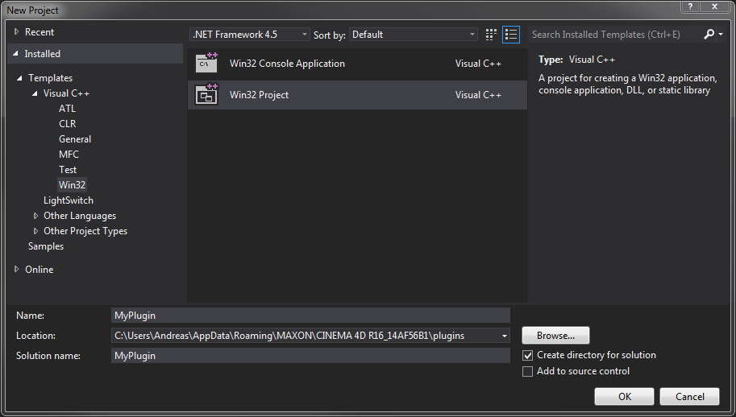
In the end click "Ok".
The Win32 Application Wizard pops up. On the Overview page simply click "Next". Then on the "Application Settings" page choose "DLL", "Empty Project" and deselect "Security Development Lifecycle (SDL) checks".
Like so:
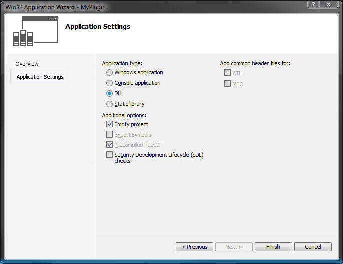
Then click "Finish".
You should end up with this:
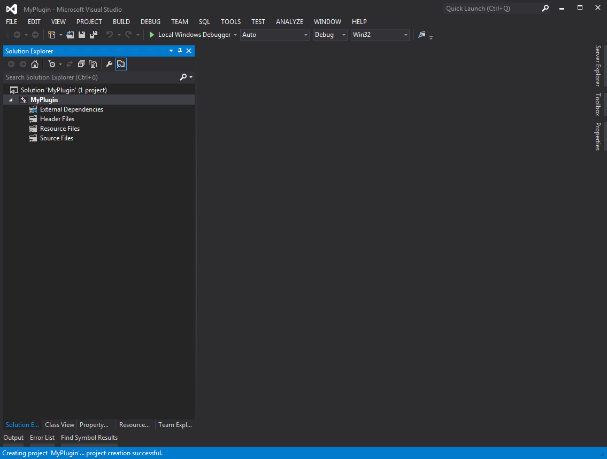
By now Visual Studio will have created a basic directory structure. One folder called MyPlugin with your solution and therein another folder with your project, also called MyPlugin.
While we are talking about directories, you may want to establish your plugins directory structure as well. Assuming that "MyPlugin" will be a rather simple plugin with a Description Resource, the directory structure could look like this (we'll assume to have this structure later on, when talking about additional include directories):
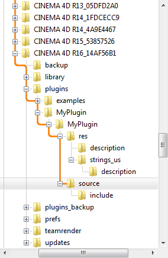
If you take a look at the "Property Manager" it looks like this:
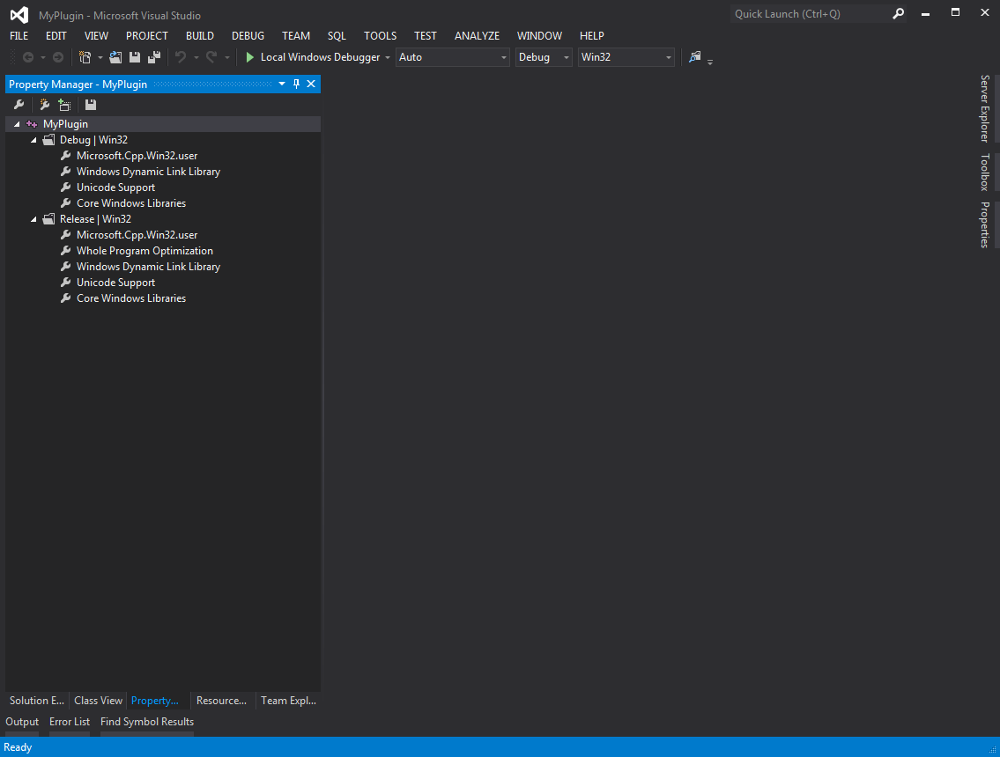
Open the "Configuration Manager" via Menu: Build → Configuration Manager...
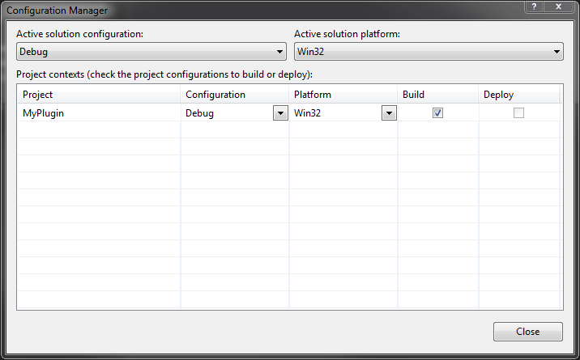
Click on the "Active solution platform:" dropdown (currently saying "Win32") and choose <New...>.
The following window pops up:
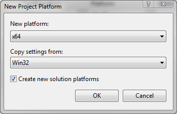
Choose "x64" for "New Platform" and keep the "Copy settings from:" at "Win32". Also leave "Create new solution platforms" checked. Just like shown in above screenshot.
Then click "Ok".
The result will look like this (with "Property Manager" on the left):
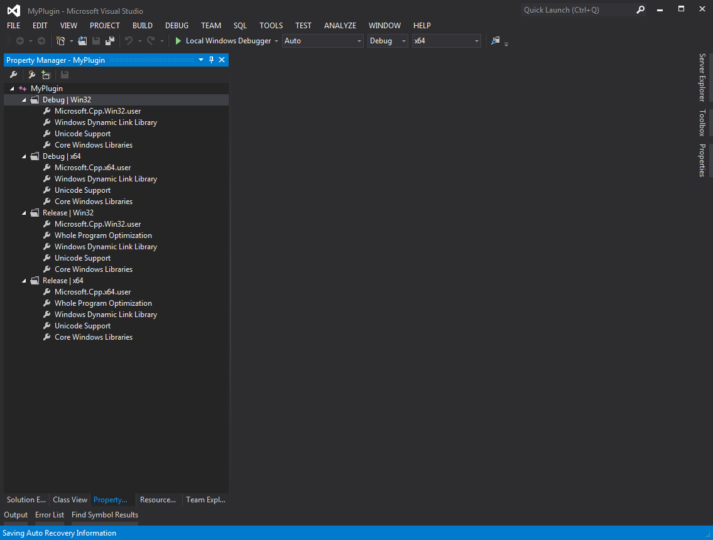
Now, you may get rid of the Win32 properties and platform. This is completely optional, the Win32 platform won't hurt. But you won't need it anymore and if you like to keep things tidy you may want to do so.
In "Property Manager" right click "Debug | Win32" and choose "Remove". A requester pops up, asking for confirmation. Click "Yes".
Now do the same for "Release | Win32".
Then enter the "Configuration Manager" again and on the "Active solution platform:" dropdown choose <Edit...>. Select the "Win32" platform and click "Remove". Afterwards close the window as well as the "Configuration Manager".
In order for your project to find cinema.framework (we'll get to it later), you need to define a macro named MAXON_ROOTDIR. This will contain the path to Cinema 4D's installation directory and will be used by the following property sheets to resolve references to cinema.framework.
In "Property Manager" right click "MyPlugin" (not one of the property sheets in the branches like "Debug | x64") and choose "Add New Project Property Sheet...". By doing so the new property sheet will automatically be added to all branches.
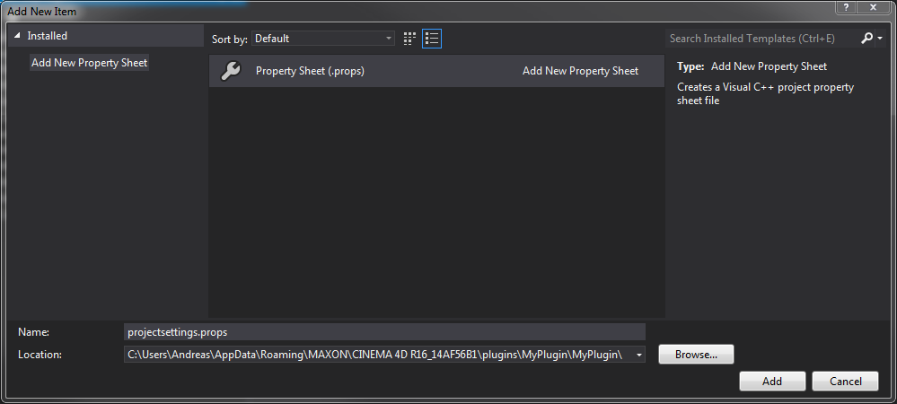
Set the name to projectsettings.props. Actually you may use any name you want, but this is the name used in cinema4dsdk example project and thus most users will have it like this. Sometimes it's nice to have it like all the others...
Then click "Add".
If you haven't done so already, unfold "Debug | x64" and "Release | x64" property branches. You should see "projectsettings" as first entry in both branches. Double click "projectsettings" (any will do) to open the "projectsettings Property Pages" (or right click and choose "Properties") and go to Common Properties → User Macros.
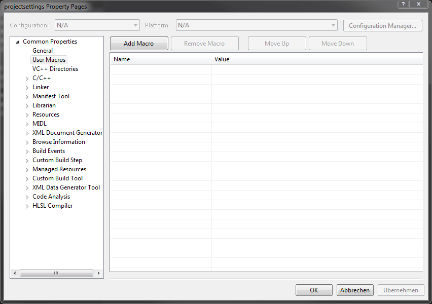
Click the "Add Macro" button. In the "Add User Macro" requester set MAXON_ROOTDIR as name and copy the path to your Cinema 4D installation into the "Value:" field (it's good to have this path in your clipboard for step 5, so you may want to keep it). There's no need to check "Set this macro as an environment variable in the build environment".
It should look like this, though the path may vary depending on your system:
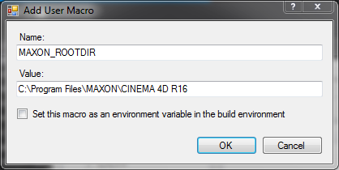
Then click "Ok" and you should have this:
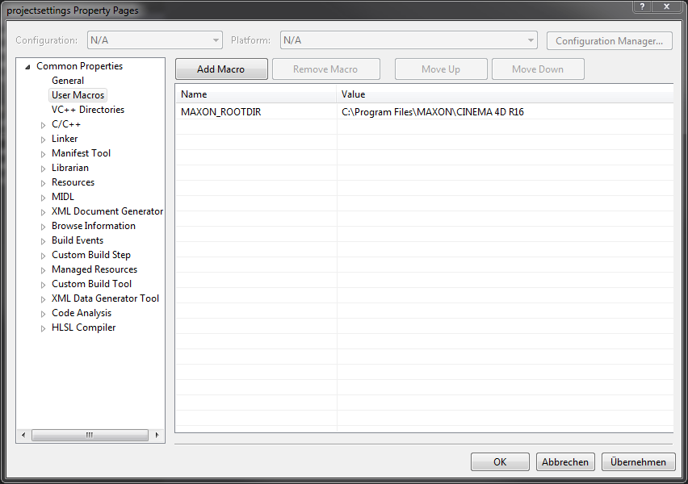
Click "Ok" to close the "Property Pages" dialog. Right click one of the new "projectsettings" property sheets and click "Save projectsettings". If you take a look into the file, you'll see, that you now have a property sheet, which does nothing else but setting the MAXON_ROOTDIR macro. You can easily reuse it in other projects.
In your "Properties Manager" it looks like this by now:
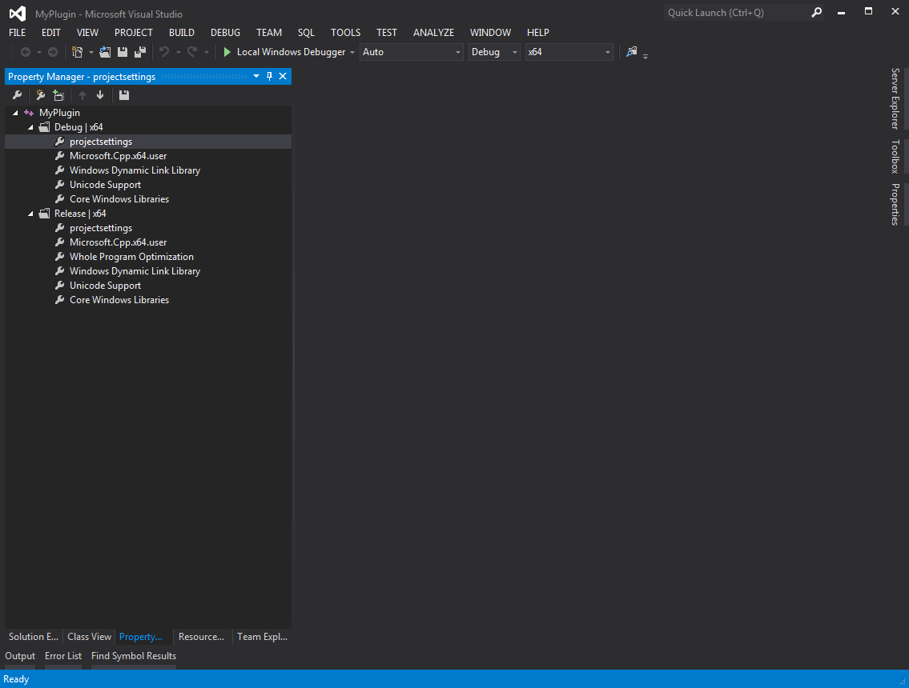
Now it's time to integrate property sheets already prepared for you by MAXON. These contain preprocessor defines and compiler options needed to properly compile and link a plugin. Right click the "Debug | x64" property and choose "Add Existing Property Sheet...". If you still have the Cinema 4D path in your clipboard, you can start by pasting it into the path field at the top. No matter what, you will need to locate DebugWin64.props, which is in "Cinema_4D_install_path"/frameworks/settings.
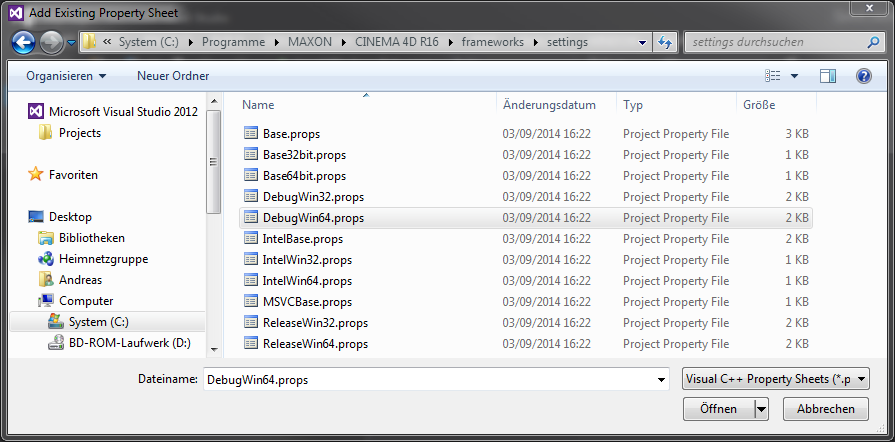
Select it and click "Open".
Do the same again with ReleaseWin64.props on "Release | x64" property.
Similar to Step 5 you need to add another property sheet. This time it contains the include paths needed by your code to find the cinema.framework header files. Right click "MyPlugin" (not like in the step before one of the branches "Debug | x64" or "Release | x64") and once more choose "Add Existing Property Sheet...". This time you need to locate cinema.framework.includes.props. It is in "Cinema_4D_install_path"\frameworks\cinema.framework\project.
After having done so, your property manager should look like this:
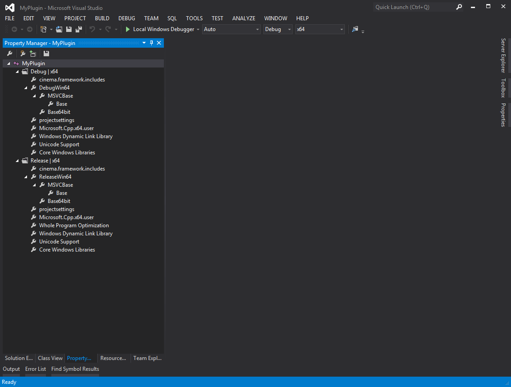
In this step the cinema.framework project gets added. While there are other ways, it's the easiest way to get the dependencies of your project right.
Return to the "Solution Explorer" on the left. Right click the solution "MyPlugin" (the topmost entry in the tree) and choose "Add Existing Project...". Locate cinema.framework.vcxproj. It is in "Cinema_4D_install_path"\frameworks\cinema.framework\project.
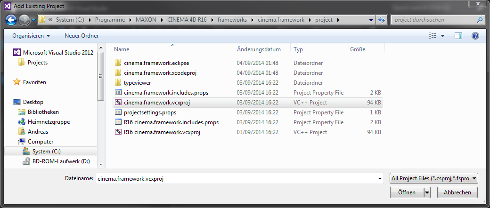
Then click "Open".
In "Solution Explorer" right click "MyPlugin" and choose "Project Dependencies...".
The following dialog pops up:
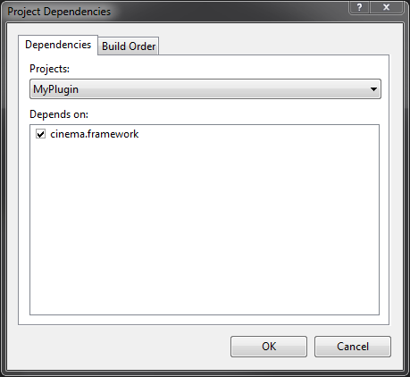
Check "cinema.framework" and click the "Ok" button.
Then open the "MyPlugin" properties and enter Common Properties → Framework and References and click "Add New Reference..."
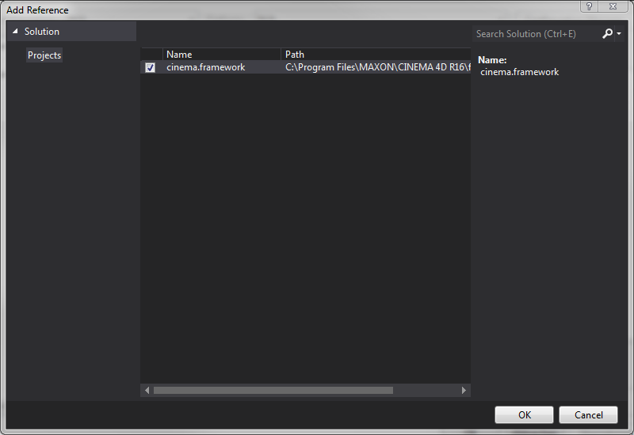
Again check "cinema.framework" and click "Ok".
The outcome should look like this:
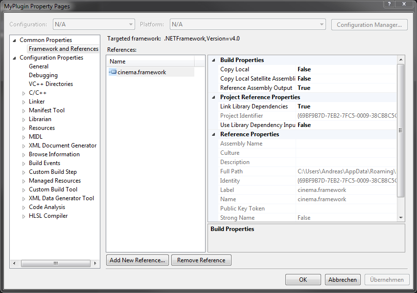
Most of the work is done. There are a few more configuration changes needed, to avoid warnings and have the final plugin named correctly. Open the "MyPlugin" properties once more and go to Configuration Properties.
The first changes will be done for All Configurations. If you removed the "Win32" platform in step 3, you'll only have the "x64" platform. So you don't need to care about "Platform" and it doesn't matter if you have "x64" or "Active(x64)" selected.
Go to the General subpage.
Set "Target Extension" to ".cdl64".
If you wouldn't change this, Visual Studio still correctly generates a plugin with .cdl64 suffix, but it will warn about the final outcome not being called as it expects it to (by default it expects .dll ).
Secondly set the "Target Name" to "$(ProjectName)".
This is not only for cosmetic purposes. By doing so the plugin will always have the same name, regardless of building a debug or release version. A debug version will, overwrite a release version and vice versa. Which is good, because in this way you will never have two plugins lying around. Otherwise Cinema 4D would find several plugins with the same IDs...
This is what your General page should look like:
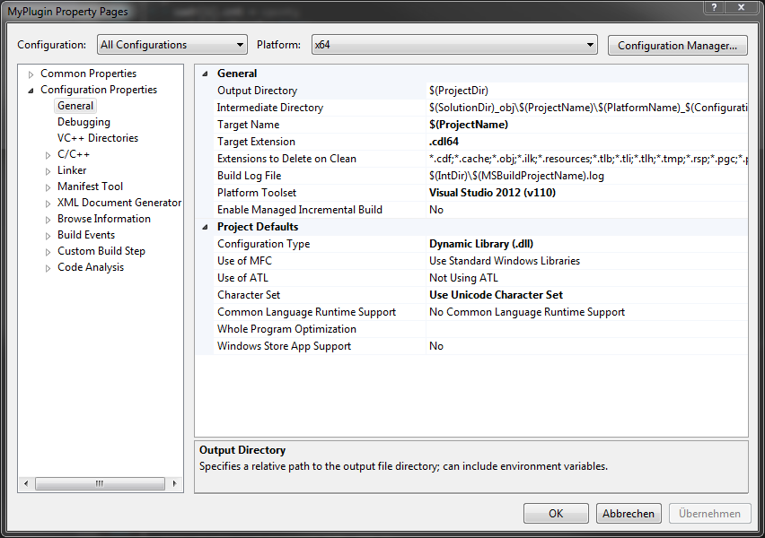
Now change to the C/C++ General subpage.
Raise the "Warning Level" to "Level4 (/W4)".
This was not always advisable with former SDK versions. But beginning with R16 you can comfortably use level 4 and we strongly recommend to do so. By paying attention to warnings you can considerably increase your code quality and avoid otherwise tedious bugs.
While you are on this page, you may want to add additional include directories. Which ones you need depends on your project's directory structure and to some extent the plugin type as well.
Assuming the directory structure proposed in step 1, you'll want to have these: ./source;./source/include;./res;./res/description;
Double click the content of "Additional Include Directories:" to edit and prepend ./source;./source/include;./res;./res/description; to the existing directories. Take care to get the semicolons right!
In the end your C/C++ General page should look a bit like this:
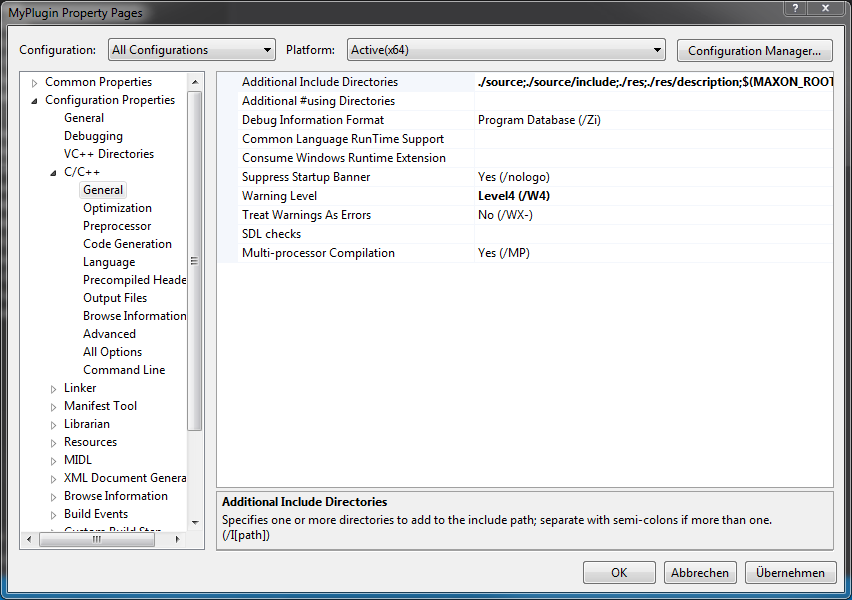
Go to the subpage C/C++ Code Generation.
Set "Enable Minimal Rebuild" to "No (/Gm-)".
Like so:
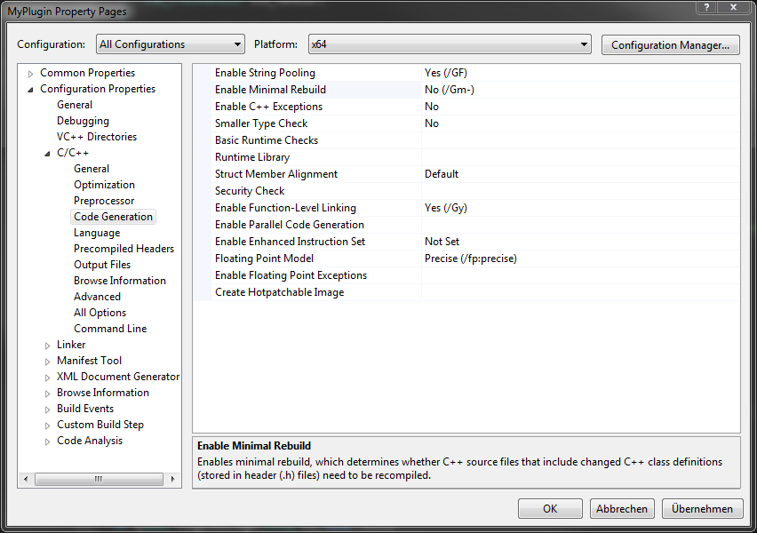
Then switch to the subpage Debugging.
In order to have Cinema 4D started from within Visual Studio, you need to set the debugging command. When you click into the line saying "Command" there will be a small dropdown button on the right. Click it and select "<Browse...>".
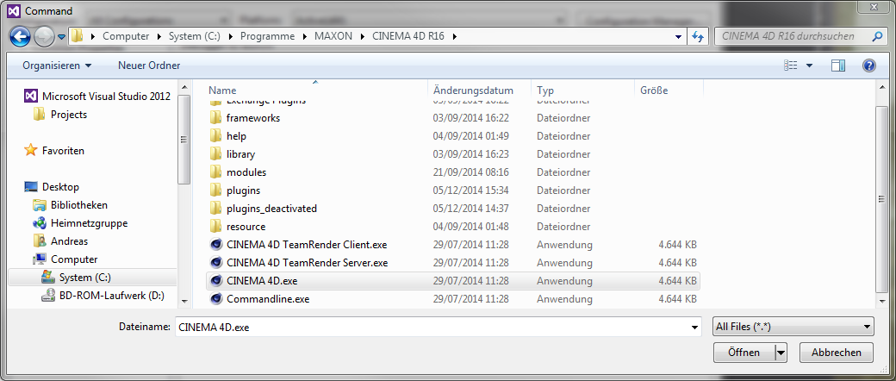
Locate CINEMA 4D.exe in your installation directory and click the "Open" button.
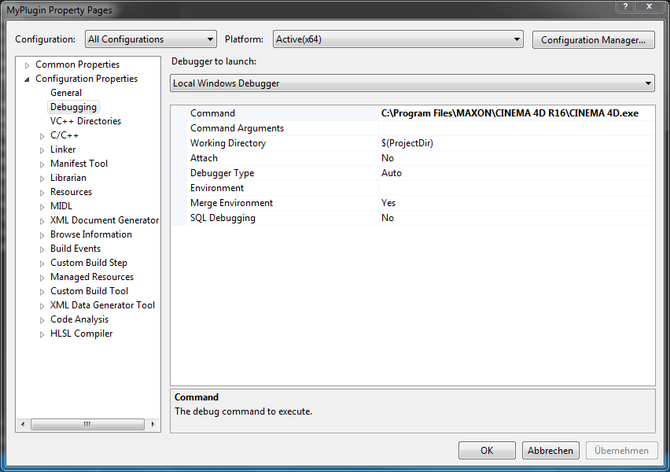
Now you are done with the changes for "All Configurations". You should click "Apply" now. Otherwise Visual Studio will ask for confirmation, when changing the Configuration in the next step.
Change the "Configuration" on top of the "Property Pages" dialog to Release and go to the C/C++ Optimization subpage. Set "Optimization" to "Full Optimization (/Ox)".
Like so:
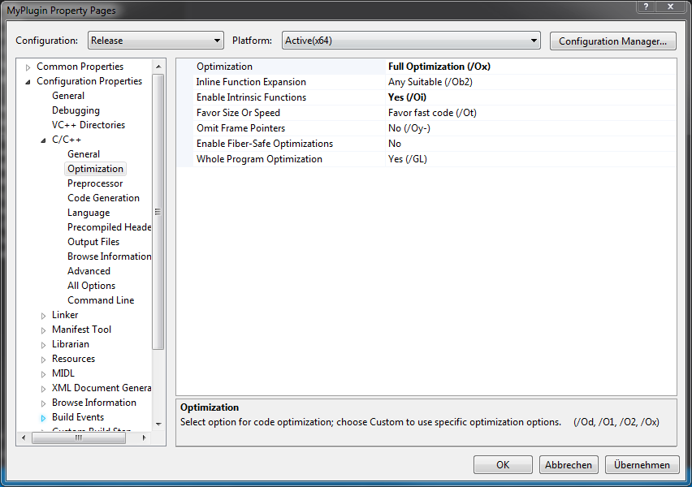
Again, before proceeding to the next step click "Apply".
This step is completely optional, it will activate the Debug Mode with additional memory checks in Cinema 4D. You can read more about it in Debugging Plugins. You probably want to do this for debug compiles, only. Switch "Configuration" to Debug and go to the Debugging subpage.
There you set "Command Arguments" to "g_alloc=debug".
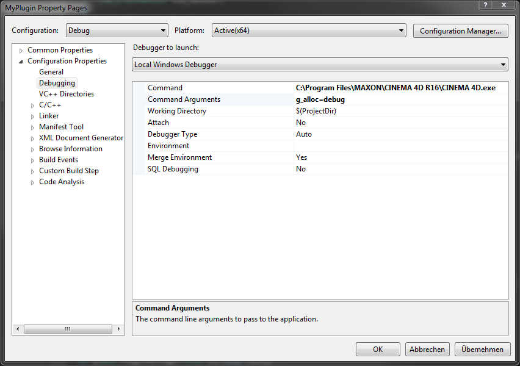
This was the last property change. Just click "Ok" in the "Property Pages" dialog to close it.
Finally add in your sources and you should be good to go.
For example you may copy the source and res subdirectories from cinema4dsdk examples into your project. In this way you have a working foundation, which you can then reduce to the parts needed in your actual project and from then on build upon.
When you start debugging your Cinema 4D plugin from within Visual Studio (running Cinema 4D in the debugger) for the first time, you'll most likely get the following warning:
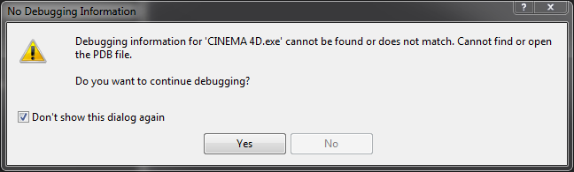
Visual Studio is complaining "No Debugging Information" and that it is missing a PDB file for CINEMA 4D.exe. This is normal as you have no debug information to debug the application itself. You can check "Don't show this dialog again" and then answer "Yes". You will still be able to debug your plugins code just fine.
{kind=link}
{kind=link}
{kind=link}
{kind=link}
{kind=link}
{kind=link}
{kind=link}
{kind=link}
{kind=link}
{kind=link}
{kind=link}
{kind=link}
{kind=link}
{kind=link}
{kind=link}
{kind=link}
{kind=link}
{kind=link}
{kind=link}
{kind=link}
{kind=link}
{kind=link}
{kind=link}
{kind=link}
{kind=link}
{kind=link}
{kind=link}